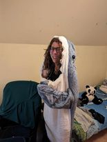
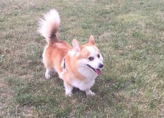
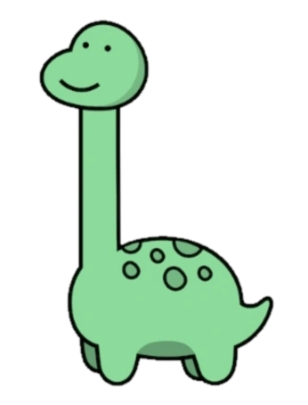

Magyar Franciska

Jelentéktelen információk:
- 21 éves vagyok
- Nem tudok programozni
- Nem a zöld a kedvenc színem
- Vegetáriánus vagyok
- Szeretem a cápákat de a dínókat jobban
- Tütürü-türütütűűűűű
- Van egy corgim!
Hobbik:
- Írás
- Olvasás
- Festés/rajzolás
- Futás
- Kutyasétáltatás
- Dinós játék
- Mások ideesítése
Képességek:
- Írás
- Olvasás
- Festés/rajzolás
- Fejlett kommunikációs késségek
- Jó megfigyelő
- Szociális hatékonyság
- Kitartás

Sajnálom, hogy ezt végig kellett nézned
